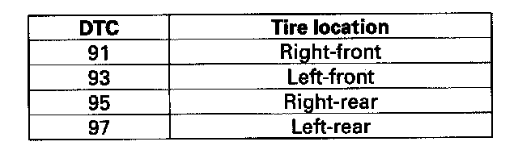

Tire Pressure Monitoring System
DTC 91, 93, 95, 97: Tire Pressure Sensor Internal Error1. Turn the ignition switch ON (II).
2. Clear the DTC with the HDS.
3. Turn the ignition switch OFF, then turn it ON (II) again.
4. Wait about 1 minute.
5. Check for DTCs with the HDS.
NOTE: The tire pressure sensor of the appropriate wheel is shown.

Is DTC 91, 93, 95 or 97 indicated?
YES - Replace the appropriate tire pressure sensor.
NO - The system is OK at this time.